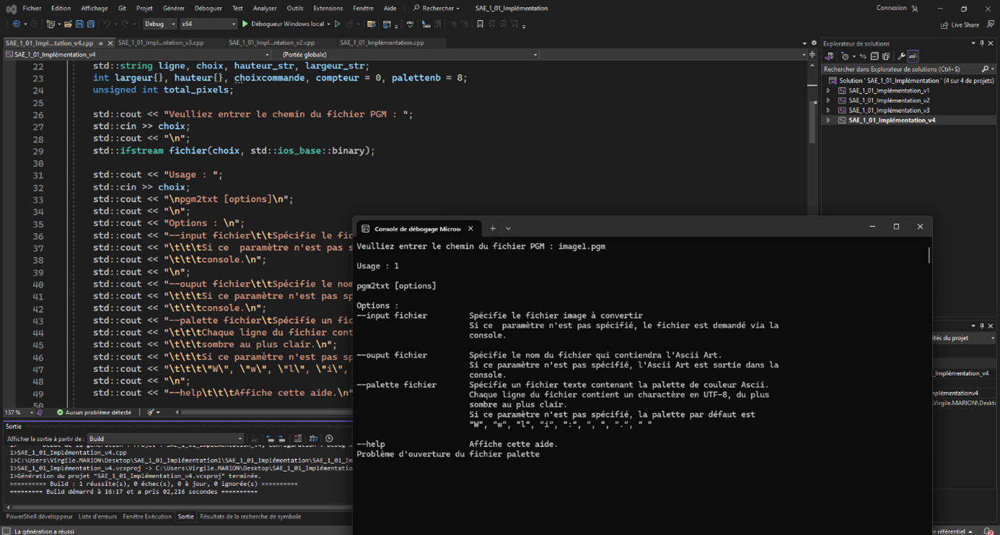

Aperçu de la fleur d'origine
Dans le cadre universitaire, lors de ce projet, j’avais pour mission au sein d’une équipe de me mettre dans la peau d’un développeur d’applications qui reçoit une commande de la part d’un client.
La commande du client avait pour objectif de réaliser un logiciel qui pourrait lui permettre de convertir des images en Ascii Art. Le client souhaite que plusieurs versions du logiciel soit créé et qui pour chaque nouvelle version soit compris des fonctionnalités supplémentaires.
Au sein de l’équipe, j’ai eu pour mission de réaliser une application qui permet de convertir des images en Ascii Art en fonction des besoins d’un client.
Dans un premier temps, j’ai dû prendre connaissance des demandes du client présent dans un cahier des charges. Ensuite, j’ai dû transformer les demandes et exigences du cahier des charges en code c++. Pour finir, il a fallu faire un compte-rendu du travail réalisé.
Techniques :
Transversales :
Humaines :

Pour conclure, lors de ce projet, j’ai pu mettre en pratique mes connaissances dans un projet concret qui peut être représentatif du travail quotidien effectué par un développeur d’application.
J’ai pu lors du projet faire face à des difficultés avec le logiciel ou bien mon propre programme et j’ai réussi à me débrouiller pour pouvoir résoudre les problèmes rencontrés.
Ce projet m’a également permis de m’améliorer dans la façon de m’organiser dans le travail à faire, car j’avais avant pour habitude de partir tête baisser dans un travail sans réfléchir avant à la façon dont je vais m’y prendre pour réaliser le travail demandé.